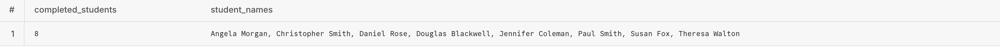

Independent academic project built for Project Destined coursework.
SQL Questions & Results
Q1
How many Student Alumni have completed the X program from Project Destined in Spring 2026?
Answer: 8 students completed Spring 2026 CRE Virtual Internship (Team CBRE Boston).
A total of 8 student alumni completed the Spring 2026 CRE Virtual Internship (Team CBRE Boston).
The query filters Spring 2026 + the CBRE Boston opportunity and keeps only student contacts.
It counts distinct students with experience status marked as “completed” and lists their names for verification.

Q2
How many all time Student Applicants came from Hofstra University in 2024?
Answer: 28 student applicants came from Hofstra University in 2024.
This counts applicants whose primary school maps to the canonical account “Hofstra University.”
It filters applications to the 2024 calendar year to ensure the number is 2024-only.
Canonicalization prevents school name variations from splitting the count.

Q3
How many corporate partners sponsored programs in Fall 2025?
Answer: 0 corporate partners sponsored programs in Fall 2025 (Project Destined funded).
The first screenshot shows the sponsor count for Fall 2025, which is 0.
The second screenshot shows Fall 2025 programs with no corporate sponsor linked (PD-funded).
The third screenshot lists corporate sponsor accounts overall, supporting that Fall 2025 sponsor count is correctly zero.
Q4
Can you tell me how many alumni from all Spring 2026 programs ended up at firms whose main focus in Real Estate development?
Answer: 20 alumni joined Real Estate Development firms.
This counts alumni from Spring 2026 programs whose most recent work experience is at a Real Estate Development firm.
It connects program participation (experiences) to employment outcomes (work_experiences + company industry).
The second screenshot lists the alumni-to-firm details that validate the count.
Q5
What should the next corporate partner we re-engage with from the past (given we haven't done programs with them recently), and why? You may want to use an LLM.
Answer: Hines is the recommended partner to re-engage.
Hines is recommended because their engagement is stale (not recent) but outcomes are strong.
Completion and participation signals suggest high re-engagement ROI.
This recommendation aligns with the partner history tables and outcome rollups.